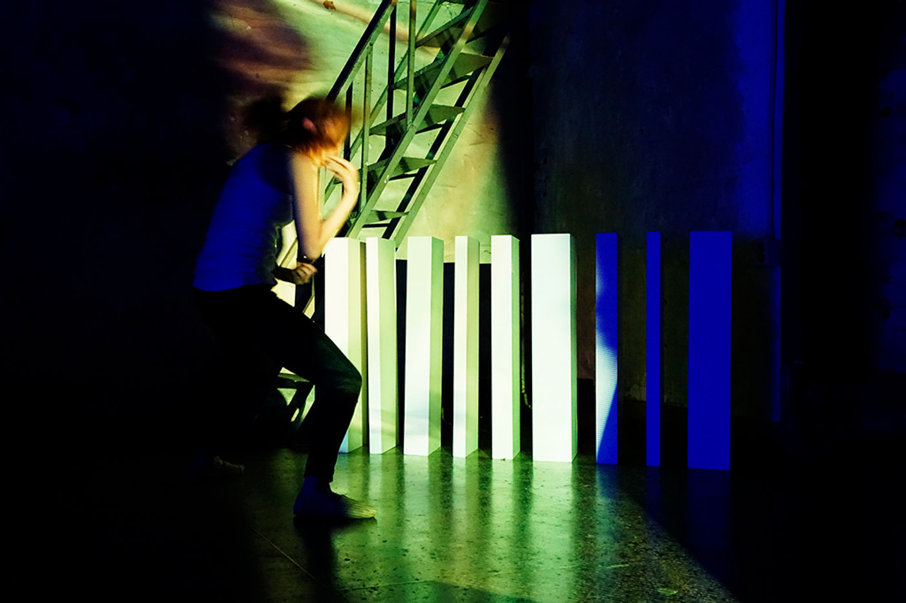
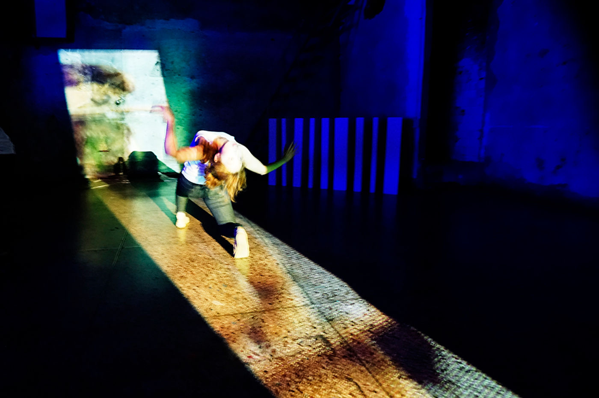
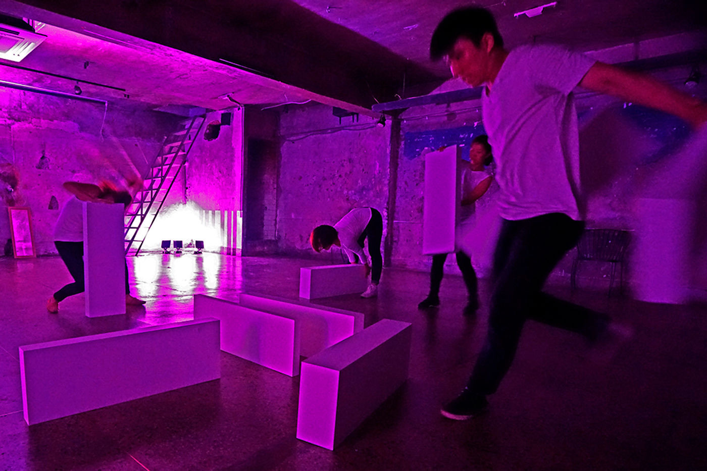
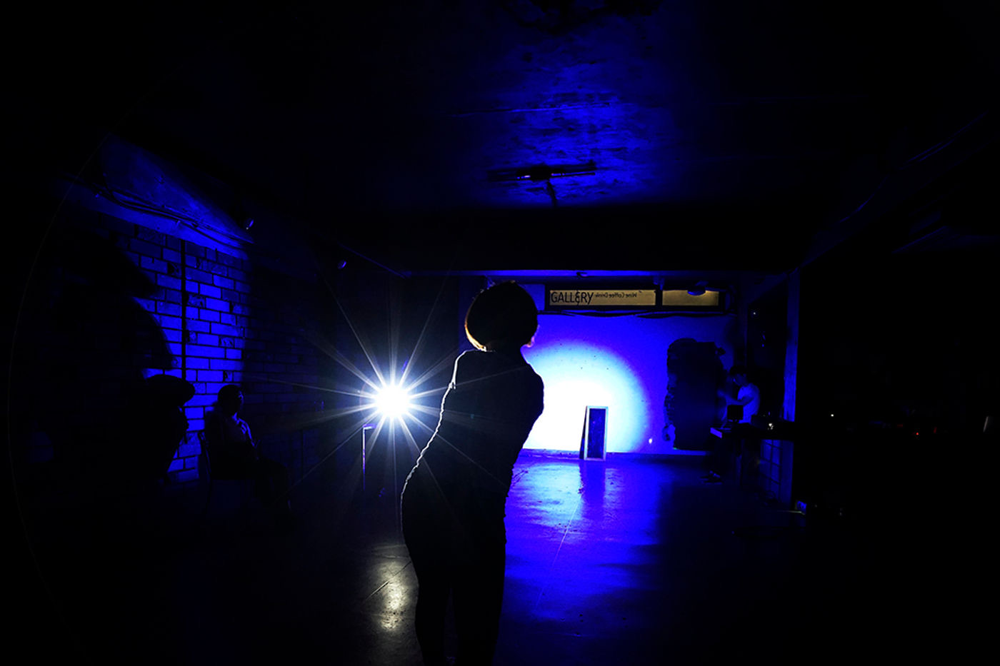

Performance — 2016
GRIDA — Episode Ⅱ Mirror
르네 마그리트의 회화를 몸으로 그리는, 시뮬라크르의 미로로 들어가는 퍼포먼스.
Painting simulacra with the body — a performance that enters the labyrinth of simulacra through René Magritte.
‘르네 마그리트, 몸으로 시뮬라크르를 그리다’. 포도 수확의 계절이 지나갔습니다. 가상과 실재, 그리고 하이퍼리얼을 비추는 이 위험한 거울의 시선에서 이야기는 시작됩니다 — 사유가 멈추고 시간이 사라지는, 무의미한 시뮬레이션의 순환. 우리는 시뮬라크르의 미로로 들어가기 위해 르네 마그리트의 작품들을 소환합니다. 마그리트의 회화를 모티프 삼아 일상의 움직임과 드로잉의 움직임을 연구하고, 그 표현들 사이의 틈을 몸짓의 방법론으로 삼아 데페이즈망(dépaysement) 기법을 채택했습니다.
‘René Magritte, Painting Simulacra with the Body.’ The season of grape harvest has passed. It begins with the gaze of this dangerous mirror reflecting the virtual, the real, and the hyperreal — a meaningless cycle of simulation where thought stops and time vanishes. We summon René Magritte’s works to enter the labyrinth of simulacra, researching everyday and drawing movements using his paintings as motifs, and adopting the technique of dépaysement as a methodology for body language in the gap between these expressions.
- 키워드
- Keywords
- René Magritte · simulacra · dépaysement · body as brush
Gallery Jungdabang Project, Seoul — 2016


